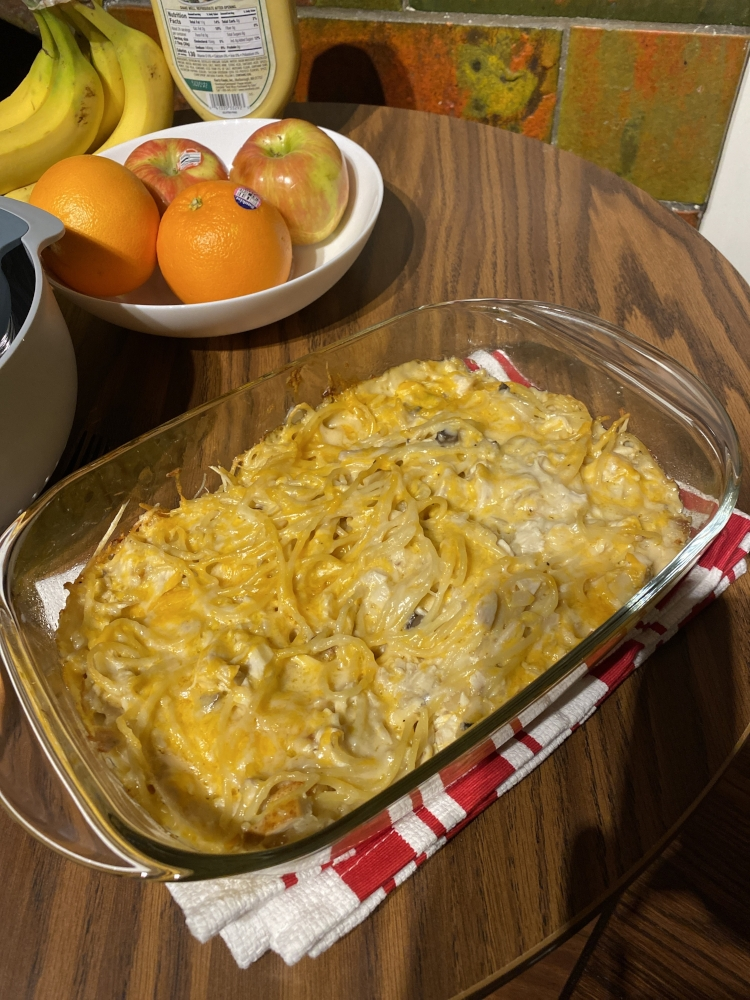
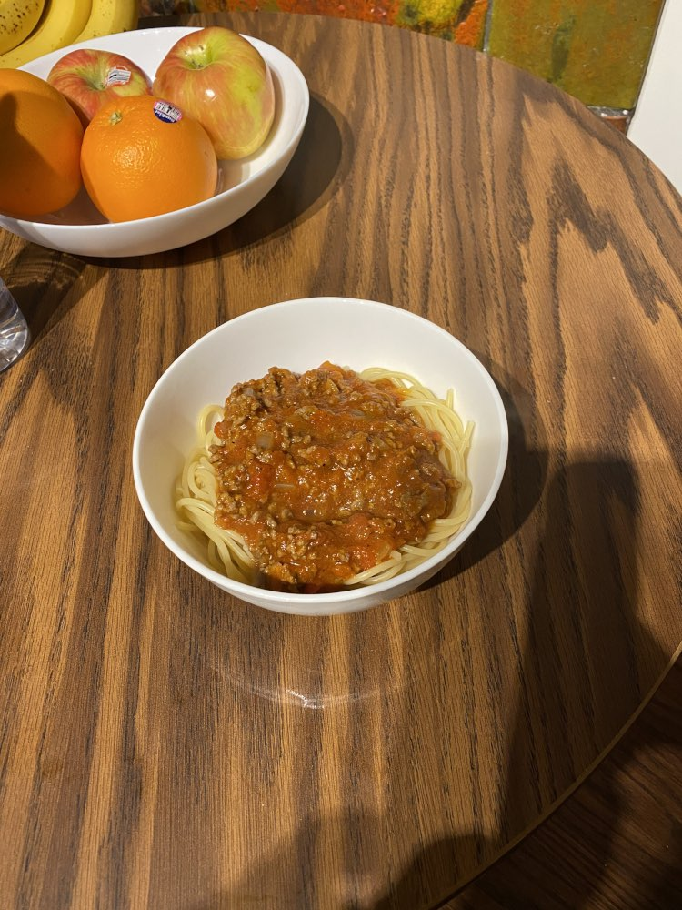
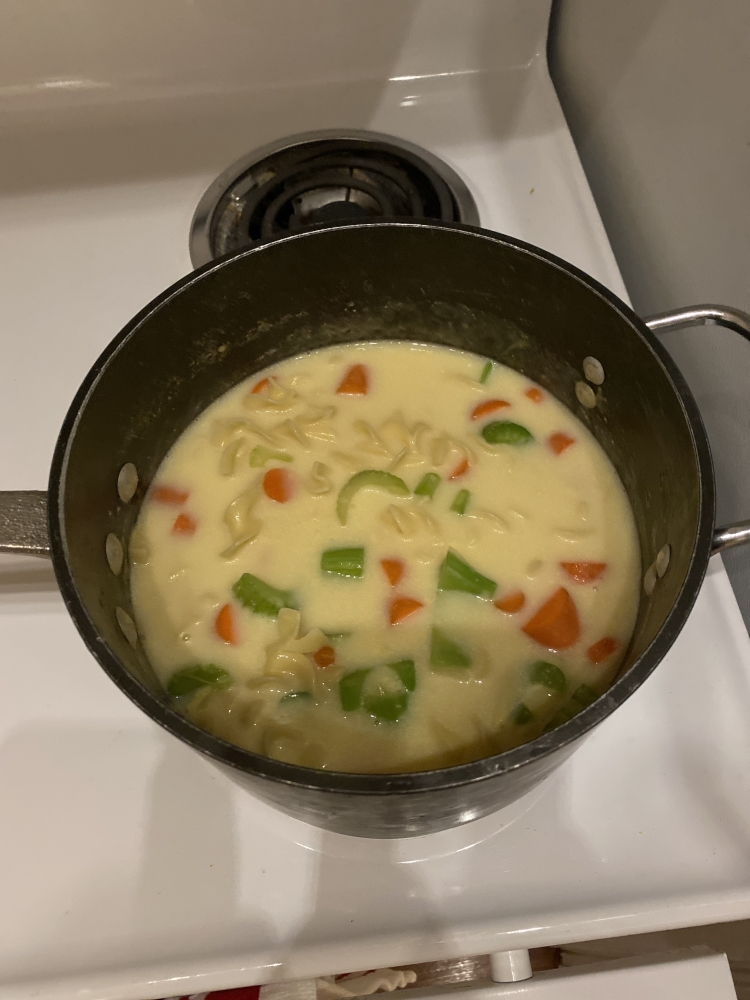
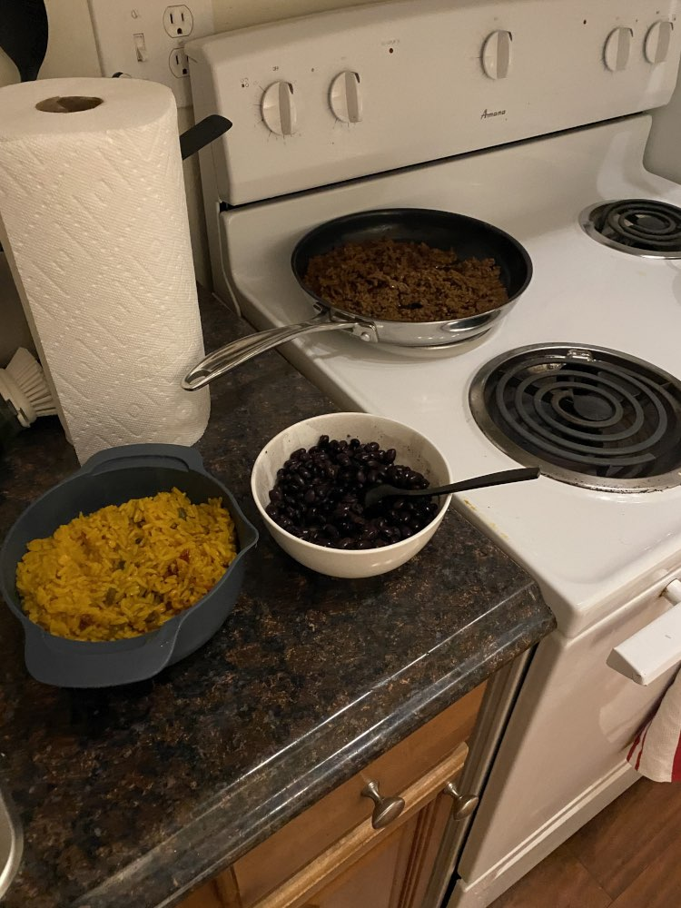
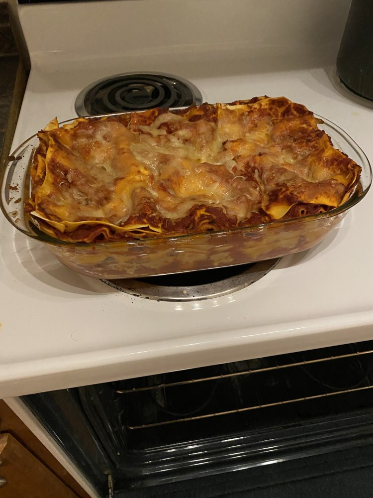

As a college student with ample amounts of free time, I have taken up cooking as a semi-hobby to pass the time and remind me of home. I say “semi-hobby” because I don’t have a full passion for it, but I do still like to cook and practice it regularly
Some things I’ve cooked:
In chronological order:





In order of best to worst (at least to my taste buds):
- Lasagne
- Chicken Tetrazzini
- Cream of Chicken Vegetable Noodle Soup
- Spaghetti with Meat Sauce
- Taco Materials
- This rating is mainly because it didn’t store in the fridge well; when it was fresh I would’ve rated it higher than the soup.
Do not that this isn’t an extensive list, as I have cooked other stuff but didn’t take pictures. Cheesy Scrambled Eggs, Turkey Sandwiches, and of course the classic Peanut Butter and Banana Bagel have been staples of my diet as well.
History of these dishes
Everything except the soup is from a recipe my Dad has taught me. Of course he’s not the sole inventor of any of them but I do believe each of these recipes has been tweaked significantly by him, over the course of many years cooking for our family, to be the dishes I know and love. I’m currently in the process of copying his cookbook one recipe at a time by phoning home to ask and then making them here. I like the food I grew up with, and unless I decide to start cooking more Korean-style stuff due to the Korean grocery nearby, I think it will stay that way for a bit longer.
Future plans
- Cheese Gnocchi Soup
- From a “Dead-simple cookbook” my grandparents got me, where each recipe assumes you have access to full kitchen supplies and many different spices and wines and meats and no, I do not have those. I didn’t skimp while buying stuff for my apartment kitchen, but I didn’t go all-out either. I do not have a mixing machine or a pressure cooker or wine or 5 different spices geez.
- So, this recipe will be modified but I think the base will still taste pretty good.
- Chocolate Chip Cookies
- This is where my Dad’s experimentation truly paid off. You think you’ve had the best chocolate chip cookies? You have not had these cookies yet. I know it’s cliche but really you have to try them. If you’re on campus, shoot me a message and I’ll bring you some once I’ve made them.